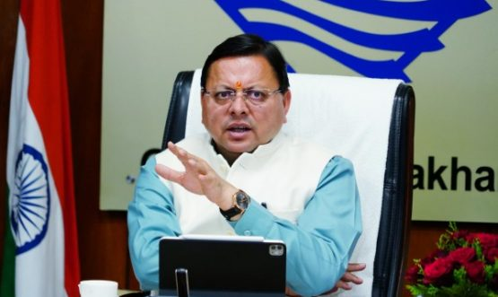

- Rispana-Bindal Elevated Road Project to Gain Speed NEW
- Uttarakhand CM Dhami directs to start work of Rispana and Bindal Corridor NEW
- Transfer Act 2026 – Important Notice for All Employees
- Right to Service portal now live for citizens
- Disclosure of Property – Submission Deadline Extended
- PWD Phone Directory Updated – April 2026
About the Department
Uttarakhand was carved out of the northern part of Uttar Pradesh on 9th Nov 2000. It is bounded by Uttar Pradesh on the South, Nepal on the East, Himachal Pradesh on the west, and China on the northeast. The geographical area of the state is 53,483 sq km.
Lok Nirman Vibhag, popularly known as P.W.D., has a legacy of more than 130 years. P.W.D. is responsible for constructing, maintaining and planning roads, bridges and Govt. Buildings. In view of strategic location of Uttarakhand bordering China/Tibet & Nepal, the responsibility of P.W.D. becomes of much more attention and seriousness from National Importance.
Events

Uttarakhand CM Dhami directs to start work of Rispana and Bindal Corridor
Dehradun (Uttarakhand) [India], February 17 (ANI): Uttarakhand Chief Minister Pushkar Singh Dhami has directed officials to begin work on the prestigious Rispana-Bindal elevated corridor project...
View All Events →